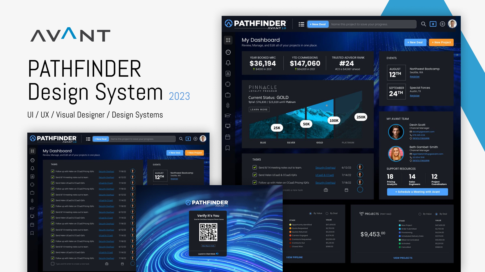

Process
Working software gets validated early, and the careful design pass is spent on what survives. AI speeds the research synthesis, variation, prototyping, and documentation passes. It does not replace judgment. The meaning and the decisions stay mine.
Name the outcome. Turn the request into a measurable problem. I capture the audience, the business goal, the constraints, the risks, and the decisions the work has to settle. If the brief contradicts itself, the contradiction is written down and resolved before the project pretends to be simple.GateA shared problem statement, a success metric, and an assumption list with owners.
Build the smallest thing that settles it. Working code early, on real content and the hardest screen first. A one-day clickable build ends arguments that a two-week email thread only deepens. AI compresses the mechanical passes, so more of the loop happens in the real thing.GateThe critical path works end to end. Rough, but real.
Prove it before it gets expensive. Put the working build in front of real people. Five moderated sessions, then a fix pass. Friction found here costs hours, not sprints.GateFindings ranked by severity. What survives moves on. What does not gets cut or rebuilt.
Spend the craft on what survived. Type, spacing, color, motion, and every state: loading, empty, error, edge. The library is built as the screens are built. Tokens, components, accessibility behavior, and content rules are captured where the team will use them.GateReusable decisions live in the library or the spec before they appear in the finished screen.
Stay through the build. Handoff is active participation: walkthroughs, QA, staging review, and governance for what changes next. The work is not done when the file is tidy. It is done when the product can keep improving without drifting.GateEngineering confirms the build path, design QA signs off, and the next-system backlog is clear.
If the number a feature is meant to move can’t be stated, that is a strategy conversation, not a design task. An hour spent finding the metric is cheaper than two weeks designing the wrong thing.
Decisions, assumptions and open questions live next to the frames they affect, not in a call half the team missed. A remote team runs on written artifacts or it runs on re-litigation.
The team holds final say. My job is to make the choice easy: the recommended option, what it trades, and the alternative rejected and why.
Design stays in the sprint. Office hours for engineers, design review on staging, and spec corrections when reality disagrees with the drawing. It will.
Pathfinder at Avant: sixteen separate tools consolidated into the states of a single deal, with the system shipped alongside the product.

Go deeper
Working agreements, the weekly rhythm, the handoff package, and the gate that closes each phase. Also available as slides.
Read the method → ii. The skill library Nine skills, documented like a productMy practice from brief intake to developer handoff, written as reusable procedures with a rubric and an output format each.
Open the library → iii. The docs Templates, references, worked examplesThe files behind the library: skill modules, templates, and seven finished artifacts.
Browse the docs → iv. The audit The method, pointed at my own systemPathfinder run through the library and checked against its own claims. Five findings, each with a file behind it.
Read the audit →If your team has reached the point where design needs to do more, whether that's anchoring a system, defining a brand, or holding a complex product together, that's the work I do best. I'm available for focused engagements and open to the right full- or part-time role.
Email first · Replies within 2–3 business days · Remote or Chicago-area hybrid